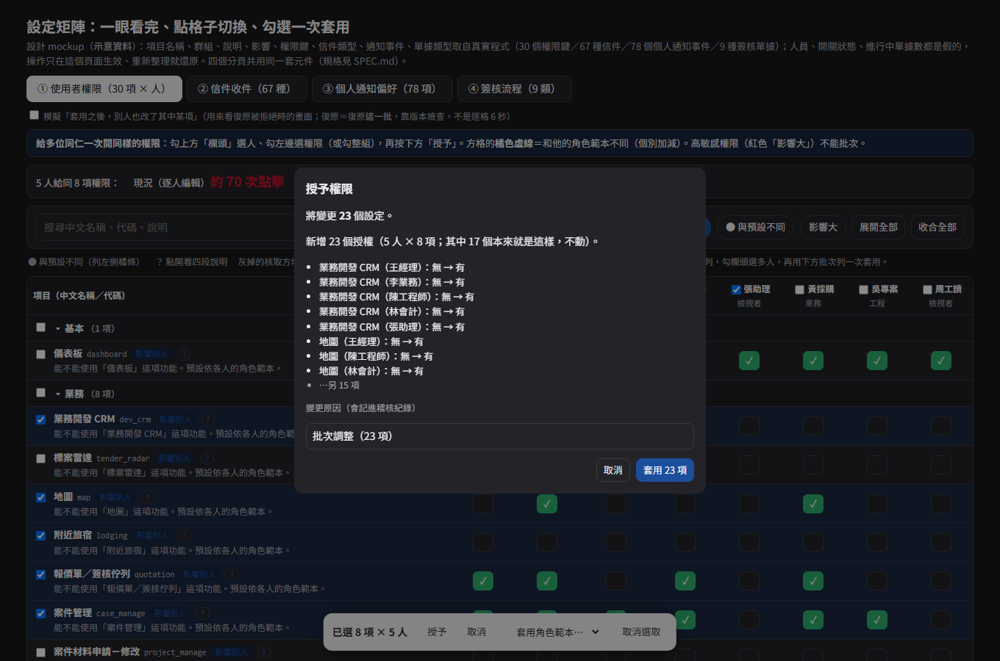
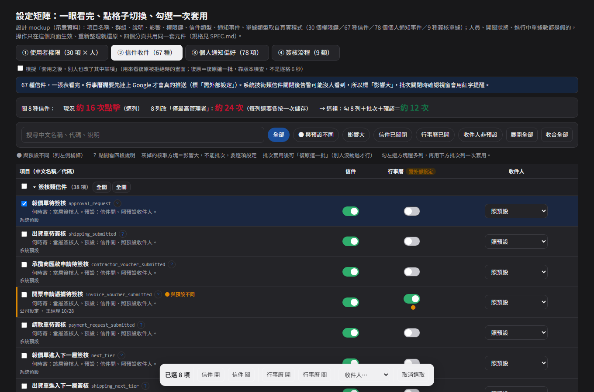
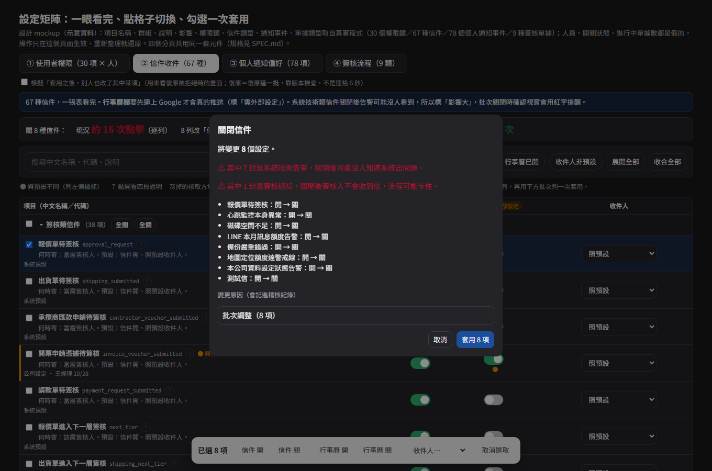
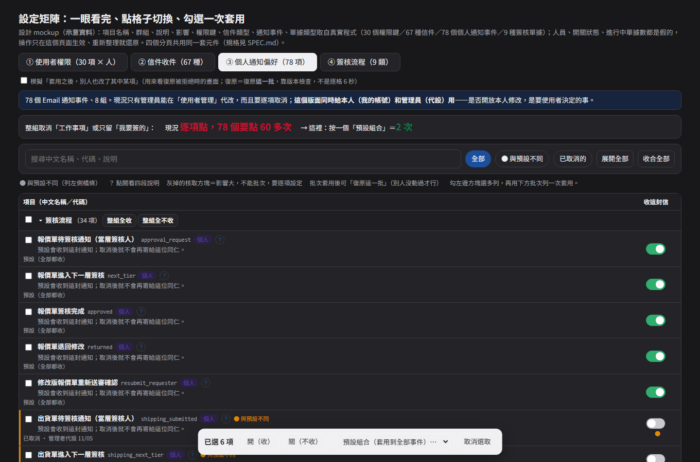
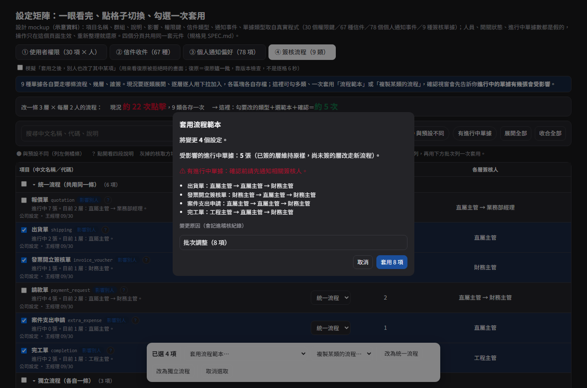
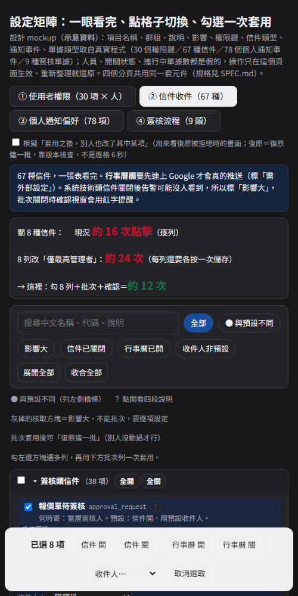

丙份設計說明：權限／信件／個人通知／簽核流程
分支 feat/settings-matrix-rollout（設計階段，使用者看過才實作）。畫面見同資料夾 index.html（四個分頁；假資料、真實項目名稱）。規格見上層 SPEC.md、盤點見 INVENTORY.md。
1. 這份 mockup 在示範什麼
四個分頁用同一套共用核心（工具列／群組列／批次列／確認視窗／復原這一批／「?」說明／與預設不同／手機卡片）；各頁只宣告「列資料＋欄＋批次動作」。目的是證明：LINE 稿、設定中心與各設定頁可以共用一套元件，不用每頁各寫一套。
| 分頁 | 真實資料 | 主要示範 | 現況 → 這裡（點擊數為推算） |
|---|---|---|---|
| ① 使用者權限 | 30 個權限鍵／10 群（module_registry.MODULES）、6 個角色範本（ROLE_TEMPLATES）、7 個高敏感鍵（HIGH_SENSITIVITY_KEYS） | 「權限鍵 × 人」矩陣；欄頭勾人、左邊勾權限；批次授予／取消／套用角色範本；方格橘色虛線＝與角色範本不同；高敏感鍵不能批次，單點要填原因 | 5 人給同 8 項：約 70 次 → 約 15 次 |
| ② 信件收件 | 67 種信件（簽核 38／業務 19／系統技術 10；mail_types.all_types()），名稱、事件、影響、建議處理皆為真實文字 | 信件／行事曆／收件人三欄；系統技術類標「影響大」，批次關閉時紅字警告；「行事曆」欄標「需外部設定」；與預設不同篩選 | 關 8 種：約 16 次 → 約 12 次；8 列改收件人：約 24 次 → 約 12 次 |
| ③ 個人通知偏好 | 78 個 Email 通知事件／8 組（notification_prefs.EVENT_GROUPS） | 整組全收／全不收；預設組合（全收／只收我要簽的／只收系統告警／全不收）一次套用；來源「預設」或「已取消」 | 逐項取消 60 多次 → 2 次（選預設組合＋確認） |
| ④ 簽核流程 | 9 種單據類型與中文名稱（tiered_approval），統一／獨立分組為預設值 | 勾多類 → 套用流程範本、複製某類的流程、改統一／獨立；確認視窗先講「進行中單據 N 張受影響」 | 改一條 3 層 × 2 人：約 22 次、9 類各存一次 → 約 5 次 |
所有人員（王經理、李業務…）、開關狀態、進行中單據數、誰何時改過都是假的；點擊數是依現有介面結構推算的判斷，不是實測。
2. 畫面







3. 照裁示畫的行為（與舊稿不同處）
- 復原＝「復原這一批」＋版本檢查（PM N2）：套用後吐司「已套用 N 項（可復原這一批）」；頁面上方有一個「模擬別人也改了」勾選，勾了再按復原，會看到被拒絕的畫面（誰、何時改了哪一項、為什麼拒絕）。單項修改沒有逐格 6 秒復原，只說「要還原請到變更紀錄」。
- 高敏感／影響大不進批次（M1 精神）：權限頁 7 個高敏感鍵的核取方塊灰掉；確認視窗列出「已略過 N 項：原因」；單點時要填原因（至少 4 字）且沒有復原。
- 每一列（規則 5）：中文名稱、小字代碼、標籤（影響大／影響別人／個人／需外部設定）、「?」四段說明、與預設不同（橘條＋●＋篩選）、來源（公司設定 · 誰 · 何時／系統預設）。
- 「?」四段（N4）：這是什麼／什麼時候要改／改了會影響什麼／建議值。信件頁的「改了會影響什麼」與「收到信後該做的事」直接取自
mail_types既有的impact／action；其餘由各頁既有登錄處產生，不另建說明檔。mockup 裡「什麼時候要改」是示意文字，實作時對應新增的SettingDef.when（或各登錄處的同義欄位）。 - 來源「個人」（N3）：只有分頁③（個人通知偏好）真的有個人層，所以只有它出現「個人」標籤。
- 群組不另標風險（N5）：群組列只顯示「幾項、其中幾項不能批次」。
4. 需要的 API／後端（丙份）
| 項目 | 內容 |
|---|---|
| 使用者權限批次 | POST /api/users/permissions/batch：{users:[…], grant:[…], revoke:[…]}；整批驗證（高敏感鍵一律拒絕並回原因）、寫權限變更紀錄與稽核；回傳每人新舊差異供「復原這一批」 |
| 信件批次 | POST /api/settings/mail/batch：{keys, mail?, calendar?, mode?}；原子驗證（沿用 LINE 批次端點的作法）；一筆稽核；「不可關閉」的信件整批拒絕並指名 |
| 個人通知偏好 | 沿用 opt-out 清單；新增本人 GET／PUT（my-account），管理員代設端點不變；預設組合純前端展開 |
| 簽核流程複製／範本 | POST /api/approval/flows/copy：{from, to:[…]}；回傳進行中單據受影響件數（確認視窗用）；範本是前端展開成既有 flow 結構 |
| 復原這一批 | 各端點接受 expectedVersion（各頁既有的更新時間／版本欄位）；衝突回 409 帶 {by, at, keys}（規格見 SPEC §5） |
5. 要使用者決定的事（丙份）
- 角色三套並存（固定 6 碼／自訂角色快速套用／職責角色連動）：「套用角色範本」要建立在哪一套上？建議以職責角色（連動）為主、自訂角色併入，否則批次改完仍會脫鉤。
- 個人 Email 偏好要給本人入口嗎？（現在只有管理員能代改；本人只能改 LINE 偏好。）
- 系統技術類信件預設只寄最高管理者：批次允許關閉嗎？（mockup 允許，但紅字提醒。）
- 行事曆事件開關兩處（google-calendar-settings 與 mail-settings 的「行事曆」欄是同一份資料）：只留 mail-settings 這一處、另一處改成連結？
- 簽核流程「複製」「套範本」會改到進行中單據的後續層，要不要先限制成「只能在沒有進行中單據時批次」？（mockup 目前是警告＋確認。）
- 權限矩陣（permission-matrix）規模小（60 格）、頻率低：本次只做白話標示與批次暫存，還是等能力接入變多再做？
6. mockup 的限制
- 確認視窗、復原、衝突拒絕只是示意；實作時批次由後端整批驗證、整批寫入、寫稽核。
- 權限頁只放 8 位示意人員；實際人數是執行期資料（未驗證）。實作時人多於一屏要改成「依部門分段＋欄頭全選」或「人在列、權限在欄」的轉置檢視。
- 簽核流程頁只示範「流程範本／複製／統一獨立」；每層簽核人的細部編輯（下拉選人）仍沿用現有展開面板，不在本稿。
- LINE 70 事件矩陣沿用 hichan-6 稿（
feat/line-events-matrix），本資料夾不重畫。